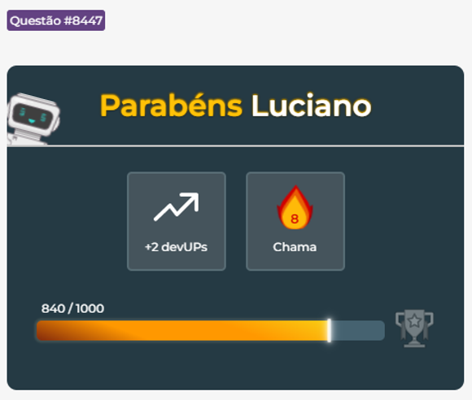

Questão|8447
Cores para o elemento span
Utilizando o padrão de cor nominal, defina as cores para o elemento span no código CSS:
Cor de texto branca
Cor de fundo preta
OBS.: Siga a ordem dos estilos acima.
span{
color: white;
background-color: black;
}
